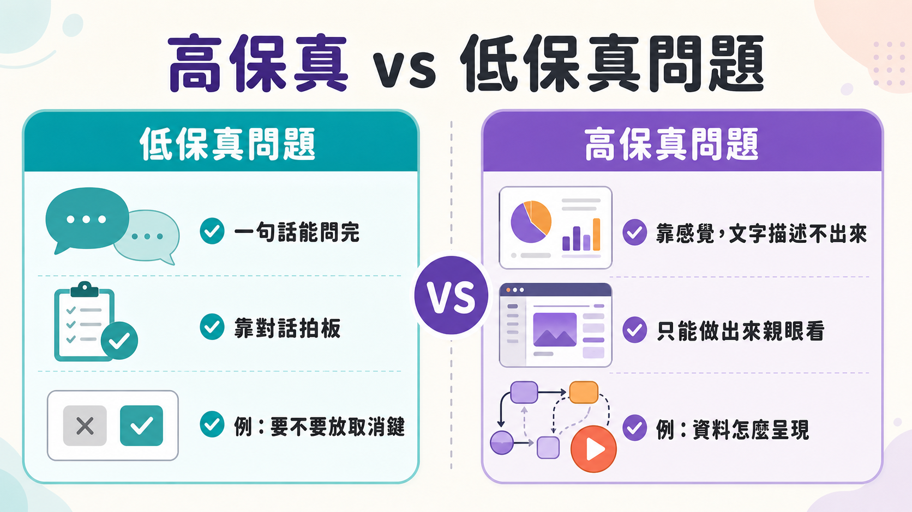
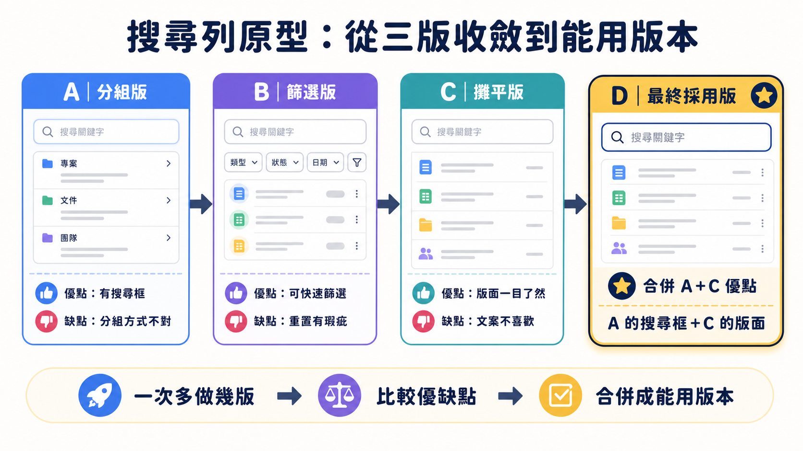

規格寫得越細，AI 產出的結果反而越容易走歪。這聽起來違反直覺——多數人以為把需求講清楚、把邊界條件列完整，AI 才不會誤解自己。Matt Pocock 在這支影片裡點出一個他觀察很久、也一直很受不了的現象：太多人把跟 AI 協作的重心全押在「把 spec 寫到極致完美」，卻忘了自己其實可以直接寫程式碼——或者說，讓 AI 直接寫一段可以丟掉的程式碼，去回答那些規格書怎麼寫都寫不清楚的問題。
規格書解決不了的，是「感覺」問題
問題不在規格寫得不夠細，而是有一整類問題本質上不是靠「描述」能解決的。Matt 舉的例子很日常：彈窗要不要放取消鍵跟確認鍵，這種事討論兩句就能拍板。但如果彈窗在某些情況下要顯示一批資料，問題立刻變了——資料怎麼呈現、排版怎麼配置、邊界情況下怎麼互動，光靠文字描述很難真的想清楚，往往是寫出來、跑起來，才發現完全不是那回事。
這正是 Agile 時代早就談過的東西，prototype 跟 spike 這兩個字甚至比「spec-driven development」資歷更老，只是不知何時被大家遺忘了。Matt 把這個習慣重新做成他技能庫裡的 prototype skill，定義很簡單：prototype 是用來回答一個問題的、可以丟棄的程式碼。這裡有一句話值得多想一層——「code is cheap」現在到處聽得到，Matt 自己也又愛又恨，但背後那個事實是真的：寫程式碼的成本這幾年斷崖式下降。過去沒人敢隨便叫工程師寫一版「試試看」的程式碼，現在讓 agent 跑一個下午幾乎不心疼。這個成本翻轉，才是整支影片真正的立論基礎，而不是單純嫌規格書不好用。
用「解析度」決定討論該做到多深

Matt 用高保真度（high fidelity）與低保真度（low fidelity）拆解這件事。設計過程裡浮現的疑問天生分屬不同解析度：「要不要放取消鍵」低保真度就夠，嘴巴講講就能定案；但「資料怎麼顯示」「這個狀態機在邊界情況下感覺對不對」，只有在半可運作的程式碼裡實際跑過，才有辦法回答。過去做出半可運作版本代價太高，大家被迫把所有討論都壓在低保真度層級，規格寫得再細也是紙上談兵。現在原型幾乎不花什麼成本，Matt 索性反過來——基本的事照樣用聊的，但只要感覺「需要真的看到、摸到它跑起來」，就直接叫一個 prototype。
放進 Wayfinder 的判斷準則
prototype skill 並非孤立存在，而是整合進 Matt 正在開發的新 skill——Wayfinder（他說之後會另拍影片講）。Wayfinder 把一大塊工作拆成多個規劃階段，每個階段對應一張工單，工單類型分成 grilling（盤問式討論）跟 prototype 兩種。預設是 grilling，跟 agent 你一言我一語定出基本範圍；但一旦需要一個便宜、粗糙、具體的東西來對照反應，就切換成 prototype，把它當資產連結進工單。判斷準則很清楚，不管有沒有用 Wayfinder 都適用：一旦問題核心變成「這東西該長什麼樣子」或「該怎麼運作」，就是動手做原型的訊號，不必再耗在文字堆裡。
案例：從三個粗糙版本收斂出能用的搜尋列

Matt 在自己那個建立在 TLDraw 上的畫圖應用裡，想加一個搜尋舊圖表的功能，資料模型不算單純——圖表本身，加上圖表隨時間變化的多個快照。他自己也沒把握搜尋列該長什麼樣、怎麼互動，於是叫了 prototype。agent 一口氣生出三個版本：A 把搜尋框放上方，但按圖表名稱分組，他覺得分組不對；B 在左側加篩選欄，可以往下收斂，只是重新搜尋時篩選會重置，還算能接受；C 把結果攤平顯示不做篩選，他很喜歡這種呈現，但不喜歡上方的搜尋文案，也嫌目前項目的呈現太技術化。整個過程他一邊操作一邊挑毛病，像對著三份可互動的設計提案給回饋，而不是對著一份文件猜測。
這場討論大約花了十萬個 token。Matt 判斷該做一次 compact 而非清空重來，因為所有設計決策都得留著，只是要繼續追加回饋：喜歡 A 的搜尋框，也喜歡 C 的版面。下一版 D 果然合併了兩者優點，重複項目也修掉，連原本沒把握能不能動的按鈕都真的可以點了。這個原型是直接接在正式運作的頁面路由上跑的——Matt 特別強調，因為接在真實路由上會比丟在一次性沙盒誠實得多，更貼近程式碼實際運作的樣子，雖然想丟到用完即棄的分支也完全可以。
原型跟規格書的落差，決定下一步順不順
到這裡 Matt 認為這個 prototype 已經完成任務——這次算快的，平常他花在這階段的時間更多。下一步，他會把原型連同所有設計決策交給一個可離線運作的 agent，把邏輯正式接上系統、刪掉原型殘留程式碼，並確保結果符合原本規格。這裡點出一個現實落差：從「討論與規格」直接跳到「可上線的正式程式碼」，跨度很大，出錯空間也大——這正是為什麼那麼多人抱怨「我明明寫了漂亮的規格書，AI 卻做出完全不對的東西」。多半不是 AI 的問題，而是討論根本沒拉到足夠高的解析度，該做原型時卻只靠嘴巴討論代替。手上有一個反覆迭代驗證過的原型，再變成正式程式碼就簡單得多，困難的設計決策早在原型階段解決掉了，實作者甚至能直接從原型分支複製貼上。當然代價也在：保真度越高，花的 token 越多；全靠討論解決省 token，但答案品質也較低，這是取捨，不是萬能解。
不只是前端的事
容易被誤會的一點是以為 prototype 只適用 UI。Matt 特別澄清：前端確實受益最多，因為「長什麼樣子」「怎麼互動」在純討論階段最難回答；但只要東西夠複雜，尤其是後端邏輯，「這個狀態模型感覺對不對」一樣反覆出現，同樣只能靠實際跑過才有答案。他舉的另一個例子是做一個小型互動終端機應用，專門把狀態機推進到那些光靠紙上推演很難想清楚的邊界情況——一個跟畫面完全無關的純邏輯原型，他收到不少人回饋說這招很好用。UI 原型跟邏輯原型在他的工作流裡各自對應一份參考文件，agent 依要建的種類去讀對應說明。
最後 Matt 提到 Ryan Singer 的《Shape Up》，他 2019 年讀的，徹底改變了他規劃產品的方式，書免費上網就找得到。他沒把這支影片包裝成什麼新發明，更像是把一個舊觀念——原型測試——重新放回 AI 協作的脈絡裡驗證一次：寫程式碼的成本被壓到接近零之後，先做一個能丟掉的版本，可能比再多寫一頁規格書都更接近答案。至於等 agent 更擅長操作畫布跟設計工具之後，線框圖會不會捲土重來，他自己也還在觀察。